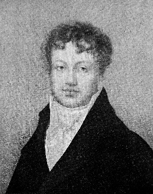
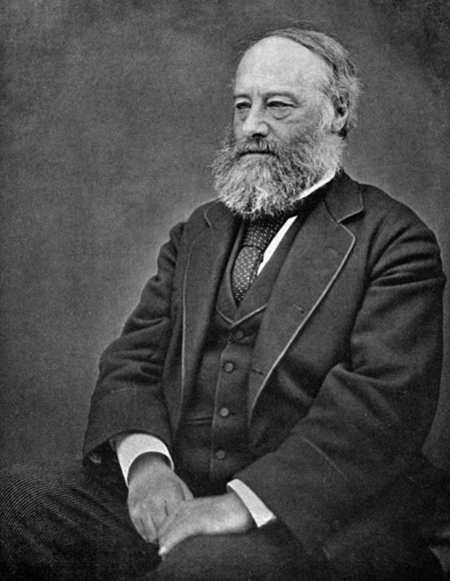
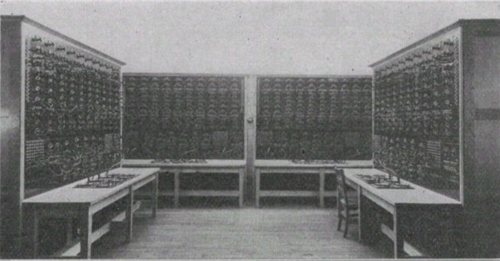
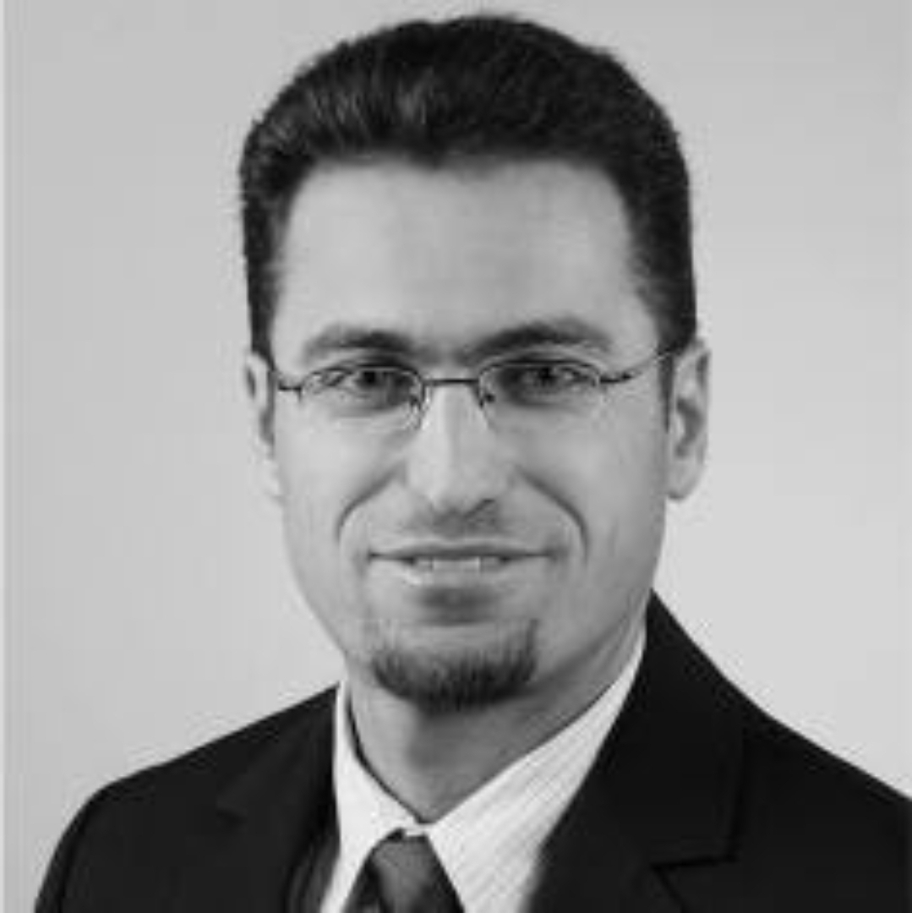

⚡ The Timeline | السلسلة الزمنية
🔬 marks a person or idea that returns in the Fundamentals Laboratory. Green cards mark selected contributions by the course instructor. | تشير 🔬 إلى فكرة ستعود في مخبر الأسس، والبطاقات الخضراء إلى مساهمات مختارة لمدرس المقرر.
Natural amber | كهرمان طبيعي
Natural ambergris — traditional perfumery material | عنبر طبيعي — مادة عطرية تقليدية
Amber (الكهرمان): fossilized tree resin that hardened over millions of years. It is light and often warm to the touch, and amber beads are prized for ornaments and prayer beads.
الكهرمان: راتنج أشجار متحجر تصلّب عبر ملايين السنين. وهو خفيف وغالبًا دافئ الملمس، وتُقدَّر خرزاته في الزينة وصناعة المسابح.
Perfume ↔ Ambergris: Ambergris has long been valued in perfumery, especially as a fragrance material and fixative that helps a scent endure.
العطر ↔ العنبر: عُرف العنبر تاريخيًا بوصفه مادة ثمينة في صناعة العطور، ولا سيما كمادة عطرية ومُثبّت يساعد على بقاء الرائحة.
Prayer beads ↔ Amber: Amber is well known in valuable prayer beads; its beads are light and pleasant to handle, and finely made pieces may also be kept as treasured objects.
المسبحة ↔ الكهرمان: يُعرف الكهرمان في صناعة المسابح القيّمة؛ فخرزه خفيف ومحبب الملمس، وقد تُقتنى القطع المتقنة منه بوصفها تحفًا للذكرى.
Electrical connection: rubbing amber can make it attract light objects—an early observation of static electricity. The Greek word elektron (amber) later became associated with electricity.
العلاقة بالكهرباء: يؤدي فرك الكهرمان إلى قدرته على جذب أجسام خفيفة؛ وهي ملاحظة مبكرة للكهرباء الساكنة. وارتبطت لاحقًا الكلمة اليونانية elektron، التي تعني الكهرمان، بمفهوم الكهرباء.
Temperature scale

Celsius proposed a centigrade temperature scale in 1742. Temperature is essential in electrical engineering because conductor resistance, semiconductor behavior, batteries, machines and transformers all depend strongly on temperature.
اقترح أندرس سلسيوس مقياسًا مئويًا لدرجة الحرارة عام 1742. وتُعد الحرارة أساسية في الهندسة الكهربائية لأن مقاومة الموصلات وأشباه الموصلات والبطاريات والآلات والمحولات تتأثر بها مباشرة.
Steam governor

 — Mechanical Feedback Control | جيمس وات — التحكم بالتغذية الراجعة الميكانيكية
— Mechanical Feedback Control | جيمس وات — التحكم بالتغذية الراجعة الميكانيكية
Origin / Nationality: Scottish | الأصل / الجنسية: اسكتلندي.
In 1788 Watt adapted the centrifugal governor to regulate steam-engine speed automatically: rising speed moves the rotating balls outward and reduces steam admission; falling speed admits more steam. It became a classic early engineering example of mechanical feedback control.
مهندس ومخترع اسكتلندي. في عام 1788 طوّع وات المنظّم الطارد المركزي لتنظيم سرعة المحرك البخاري آليًا: فارتفاع السرعة يُبعد الكرات الدوّارة عن المحور ويقلل دخول البخار، وانخفاضها يسمح بدخول مزيد منه. وأصبح ذلك مثالًا هندسيًا مبكرًا مهمًا على التحكم الميكانيكي بالتغذية الراجعة.
ظهر أول وصف منشور معروف للمنظّم الطارد المركزي في مجلة Nicholson’s Journal عام 1798، وكان عن منظّم يُستخدم للتحكم بعجلة مائية، ولم يكن ورقة علمية كتبها جيمس وات نفسه.
ملاحظة: لم يخترع وات المبدأ من الصفر؛ بل طوّع آلية كانت معروفة في تنظيم المطاحن لتناسب المحرك البخاري.
Coulomb’s law

Using a torsion balance, Coulomb quantified the electrostatic force between charged bodies and established the inverse-square relation that became Coulomb’s law.
استخدم كولون ميزان الالتواء لقياس القوة الكهروستاتيكية بين الأجسام المشحونة، ووضع العلاقة العكسية مع مربع المسافة المعروفة اليوم بقانون كولون.
Galvani experiments

Experiments on frog muscles linked electrical phenomena with biological tissue and helped open the way to electrochemistry.
ربطت تجاربه بين الظواهر الكهربائية والأنسجة الحية ومهدت للنقاش الذي قاد إلى البطارية.
Metric system
During the French Revolution, measurement reform aimed at a universal decimal system tied to nature. The metre was conceived from the Earth's dimensions; in 1799 reference standards for the metre and kilogram were deposited in France. This created the historical foundation from which MKS later developed.
خلال الثورة الفرنسية اتجه إصلاح القياس نحو نظام عشري عالمي مرتبط بالطبيعة. صُمّم المتر انطلاقًا من أبعاد الأرض، وفي عام 1799 أودعت في فرنسا معايير مرجعية للمتر والكيلوغرام. ومن هذه القاعدة التاريخية تطور لاحقًا نظام MKS.
Voltaic pile

Problem: How can a continuous electrical source be produced?
The voltaic pile provided a sustained source of electric current and transformed electricity from brief demonstrations into a controllable experimental source.
المشكلة: كيف نولد مصدرًا كهربائيًا مستمرًا؟ قدّم العمود الفولطي مصدرًا مستمرًا ومهّد لدراسة الدارات.
Current & magnetism


Ørsted demonstrated the connection between electric current and magnetism; Ampère developed the study of forces and magnetic effects produced by currents.
أثبت أورستد الصلة بين التيار والمغناطيسية، وطور أمبير دراسة التأثيرات المغناطيسية للتيارات.
Ohm’s law
.jpg)
Need: a quantitative relation between voltage, current and resistance.
لماذا هو مهم؟ حوّل سلوك الدارة إلى علاقة حسابية؛ ومنها يستطيع المهندس إيجاد الجهد أو التيار أو المقاومة.
Induction
%20Wellcome%20M0011250.jpg)
Problem: Can magnetism generate electricity?
Electromagnetic induction became a foundation for generators and transformers.
الحث الكهرومغناطيسي هو أحد الأسس التي جعلت المولدات والمحولات ونظم القدرة ممكنة.
Self-induction

Henry made major early contributions to electromagnetism and independently discovered electromagnetic induction. His name was later assigned to the SI unit of inductance.
قدّم جوزيف هنري إسهامات مبكرة مهمة في الكهرومغناطيسية واكتشف الحث الكهرومغناطيسي بصورة مستقلة. وحملت وحدة المحاثة في النظام الدولي اسمه لاحقًا.
Gauss–Weber measurement

Weber helped establish precise electrical measurement and worked with Gauss on terrestrial magnetism and an early electromagnetic telegraph. The SI unit of magnetic flux bears his name.
أسهم فيبر في تأسيس القياسات الكهربائية الدقيقة، وعمل مع غاوس في المغناطيسية الأرضية والتلغراف الكهرومغناطيسي المبكر. وحملت وحدة الفيض المغناطيسي اسمه.
Dynamo-electric principle

Siemens was a pioneer of electrical engineering, telegraphy and electric-power technology. His dynamo-electric work helped make efficient electrical generation practical.
كان فيرنر فون سيمنس من رواد الهندسة الكهربائية والتلغراف وتقنيات القدرة، وأسهم مبدأ الدينامو الكهربائي لديه في جعل توليد الكهرباء عمليًا وأكثر كفاءة.
Joule heating

Joule established quantitative links between electrical current, heat, work and energy. Joule heating is fundamental in cables, resistors, machines and power-system losses.
ربط جول كمّيًا بين التيار الكهربائي والحرارة والشغل والطاقة. ويُعد تسخين جول أساسياً لفهم المقاومات والكابلات والآلات وضياعات نظم القدرة.
Equivalent-network theorem

Need: simplify linear systems and separate the effect of independent excitations.
أصبحت فكرة التراكب والتمثيل المكافئ وسيلة لفهم مساهمة كل مصدر وتبسيط الشبكات الخطية.
Kirchhoff’s laws

Problem: Ohm's law alone cannot conveniently solve networks with many nodes and loops.
قدّم قانونا العقد والحلقات أساسًا منهجيًا لتحليل الشبكات الكهربائية اعتمادًا على حفظ الشحنة والطاقة.
Absolute temperature scale

Kelvin developed the absolute thermodynamic temperature scale and also made major contributions to electrical measurement, telegraph engineering and circuit theory.
طوّر كلفن مقياس درجة الحرارة الديناميكية الحرارية المطلقة، كما قدّم إسهامات مهمة في القياسات الكهربائية وهندسة التلغراف ونظرية الدارات.
Electromagnetic field theory

Maxwell's field theory unified electricity, magnetism and electromagnetic waves into a common mathematical framework.
وحّدت نظرية ماكسويل الكهرباء والمغناطيسية والموجات الكهرومغناطيسية ضمن إطار رياضي واحد.
Metre Convention
On 20 May 1875, the Metre Convention was signed to promote international unification and improvement of the metric system and created the BIPM — International Bureau of Weights and Measures. In 1889, international prototypes of the metre and kilogram, together with the astronomical second, formed the mechanical MKS framework.
في 20 أيار 1875 وُقّعت اتفاقية المتر لتوحيد النظام المتري وتحسينه دوليًا، وأنشأت BIPM — المكتب الدولي للأوزان والمقاييس. وفي 1889 شكّل النموذجان الدوليان للمتر والكيلوغرام، مع الثانية الفلكية، إطار MKS الميكانيكي.
Electric power systems


Practical electric lighting and DC distribution expanded while polyphase AC machines and transmission enabled efficient transformation and long-distance delivery.
انتقلت الكهرباء من المختبر إلى أنظمة إنارة وتوزيع فعلية، ثم سمح التيار المتناوب متعدد الأطوار بالنقل والتحويل بكفاءة.
Electron

Thomson’s cathode-ray experiments showed that the rays contained universal negatively charged particles smaller than atoms and determined their charge-to-mass ratio. These particles became known as electrons.
أظهرت تجارب طومسون على أشعة المهبط وجود جسيمات سالبة الشحنة أصغر من الذرة، وحدد نسبة شحنتها إلى كتلتها؛ وهي الجسيمات التي عُرفت لاحقًا بالإلكترونات.
EM waves

Heinrich Hertz experimentally demonstrated electromagnetic waves, providing crucial experimental confirmation of Maxwell’s electromagnetic theory. He died in 1894 at only 36 years old, yet his name became permanently associated with frequency: hertz (Hz).
أثبت هاينريش هرتز تجريبيًا وجود الموجات الكهرومغناطيسية، مقدّمًا تأكيدًا تجريبيًا مهمًا لنظرية ماكسويل الكهرومغناطيسية. توفي عام 1894 عن عمر 36 عامًا فقط، ومع ذلك ارتبط اسمه إلى الأبد بالتردد: الهرتز (Hz).
ماكسويل ← هرتز ← الموجات الكهرومغناطيسية ← التردد ← Hz
Thévenin theorem

Léon Charles Thévenin (1857–1926) 🇫🇷 French | فرنسي 69 · ≈26 @ 1883 🔬 Lab
Problem: Must a large linear network be solved again whenever the load changes?
يمكن اختزال شبكة خطية كاملة كما تُرى من طرفين إلى مصدر جهد ومقاومة؛ لذلك يصبح تغيير الحمل وتحليله أسهل بكثير.
MKS → electrical units
In 1901, Italian engineer Giovanni Giorgi (1871–1950) showed that the mechanical MKS system could be combined coherently with practical electrical units by adding a fourth electrical base unit. This idea ultimately led to the metre–kilogram–second–ampere system, MKSA; the ampere-based proposal was approved by the CIPM in 1946.
في عام 1901 بيّن المهندس الإيطالي جيوفاني جورجي (1871–1950) إمكان دمج نظام MKS الميكانيكي بصورة متسقة مع الوحدات الكهربائية العملية بإضافة وحدة كهربائية أساسية رابعة. وقادت هذه الفكرة لاحقًا إلى نظام MKSA؛ واعتمد CIPM المقترح القائم على الأمبير عام 1946.
\[C=A\,s,\quad V=W/A,\quad \Omega=V/A,\quad S=A/V\]
Power factor
In 1901, based on AC theory, Browne described the phase difference between two sinusoidal waves as an angular displacement, measured in degrees, between corresponding points such as zero crossings or maxima. When one sinusoid represents the electromotive force (voltage) and the other the current, the cosine of the phase angle is the power factor (PF).
في عام 1901، وبالاستناد إلى نظرية التيار المتناوب، وصف Browne فرق الطور بين موجتين جيبيتين بأنه إزاحة زاوية تُقاس بالدرجات بين نقاط متناظرة، مثل عبور الصفر أو القيم العظمى. وعندما تمثل إحدى الموجتين القوة المحركة الكهربائية (الجهد) وتمثل الأخرى التيار، فإن جيب تمام زاوية الطور يُسمى معامل الاستطاعة (PF).
For \(\varphi=0^\circ\), voltage and current are in phase and \(PF=1\). The increasing use of induction motors in factories introduced inductive loads with power factors below unity, making power-factor improvement an important practical problem in AC power systems.
عندما تكون \(\varphi=0^\circ\)، يكون الجهد والتيار متوافقين في الطور ويصبح \(PF=1\). ومع انتشار المحركات الحثية في المصانع ظهرت أحمال حثية ذات معامل استطاعة أقل من الواحد، فأصبح تحسين معامل الاستطاعة مسألة عملية مهمة في نظم القدرة ذات التيار المتناوب.
28 July 1914 – 11 November 1918 · Duration: about 4 years, 3 months and 2 weeks. War disrupted societies and academic institutions while also redirecting scientific and engineering effort toward wartime needs.
28 تموز 1914 – 11 تشرين الثاني 1918 · المدة: نحو 4 سنوات و3 أشهر وأسبوعين. أثّرت الحرب في المجتمعات والمؤسسات الأكاديمية، وفي الوقت نفسه أعادت توجيه جانب من الجهد العلمي والهندسي نحو متطلبات الحرب.


Hans Ferdinand Mayer (1895–1980) 🇩🇪 German | ألماني & Edward L. Norton (1898–1983) 🇺🇸 American | أمريكي 🔬 Lab
Norton’s theorem—also called the Mayer–Norton theorem in some references—is the current-source dual of Thévenin’s theorem and is especially useful for parallel networks and current analysis.
In 1926, Hans Ferdinand Mayer of Siemens & Halske and Edward Lawry Norton of Bell Labs independently described the current-source equivalent. Mayer published the result in a German technical journal, while Norton recorded it in an internal Bell Labs technical memorandum. The result later became widely known as Norton’s theorem, while Mayer–Norton is also used in some references.
نظرية نورتون (Norton’s Theorem) — أو نظرية ماير–نورتون (Mayer–Norton Theorem) كما تُعرف في بعض المراجع — هي النظير التياري لنظرية ثيفينن، وتُسهّل تحليل الفروع المتوازية والتيارات.
توصّل إليها بصورة مستقلة عام 1926 عالمان: هانس فرديناند ماير في Siemens & Halske، الذي نشر النتيجة في مجلة تقنية ألمانية، وإدوارد لوري نورتن في Bell Labs، الذي وثّقها في مذكرة تقنية داخلية. وعُرفت النتيجة لاحقًا على نطاق واسع باسم «نظرية نورتون»، مع استخدام تسمية «ماير–نورتون» أيضًا في بعض المراجع.
AC Network Analyzer
From physical networks to simulation: A simulation is an approximate model of a real activity, process, or system. In 1930, an early alternating-current (AC) network analyzer was installed in the Electrical Engineering Research Laboratory at MIT in Cambridge, Massachusetts.
من الشبكة الحقيقية إلى المحاكاة: المحاكاة هي نموذج أو نسخة تقريبية لعملية أو نشاط أو نظام حقيقي. في عام 1930 رُكّب محلّل مبكر لشبكات التيار المتناوب (AC) في مختبر أبحاث الهندسة الكهربائية في MIT بمدينة كامبريدج، ماساتشوستس.
The analyzer was an analogue physical simulator: equivalent-π circuits represented AC transmission lines and transformers using real electrical components such as resistors, inductors, capacitors and switches. Engineers could configure a scaled electrical network and study its behavior before modern digital computers were available.

محاكي ومحلّل شبكة القدرة الكهربائية، 1930
كان الجهاز محاكيًا تماثليًا فيزيائيًا؛ إذ استُخدمت دارات π المكافئة لتمثيل خطوط نقل ومحولات شبكات التيار المتناوب باستخدام عناصر كهربائية حقيقية مثل المقاومات والمحاثات والمكثفات والمفاتيح. وبذلك أمكن للمهندسين بناء شبكة كهربائية مصغّرة ودراسة سلوكها قبل ظهور الحواسيب الرقمية الحديثة.
1 September 1939 – 2 September 1945 · Duration: 6 years and 1 day. Universities and civilian research were severely disrupted in many regions, while large scientific programs were mobilized for wartime technology.
1 أيلول 1939 – 2 أيلول 1945 · المدة: 6 سنوات ويوم واحد. تعطلت الجامعات والبحوث المدنية بشدة في مناطق عديدة، بالتوازي مع تعبئة علمية واسعة لتطوير تقنيات مرتبطة بالحرب.
Power-system problem: How should transmission losses be represented when generation is scheduled?
بدأت مسائل التشغيل الاقتصادي تأخذ ضياعات شبكة النقل بالحسبان، وهي خطوة مهمة باتجاه مسائل تدفق الاستطاعة والتحسين اللاحقة.
The transistor helped usher in the semiconductor era and later enabled compact electronics, digital computation, measurement, and control.
فتح الترانزستور عصر أنصاف النواقل، ومهّد للحوسبة الرقمية والقياس والتحكم التي أصبحت لاحقًا أدوات أساسية في نظم القدرة.
Power-System Programming
J. B. Ward & H. W. Hale: their 1956 paper Digital Computer Solution of Power-Flow Problems is a landmark in using digital computers to solve power-flow equations. Here, 1956 is used as a teaching milestone for the emergence of programming in power systems.
J. B. Ward & H. W. Hale: يُعد بحثهما المنشور عام 1956 بعنوان Digital Computer Solution of Power-Flow Problems محطة بارزة في استخدام الحاسوب الرقمي لحل معادلات تدفق الاستطاعة. لذلك نعتمد عام 1956 هنا كمحطة تعليمية لولادة البرمجة في أنظمة القدرة.
AIEE = American Institute of Electrical Engineers — founded 1884.
IRE = Institute of Radio Engineers — founded 1912.
IEEE = Institute of Electrical and Electronics Engineers — formed in 1963 when AIEE and IRE merged.
AIEE = المعهد الأمريكي لمهندسي الكهرباء — تأسس عام 1884.
IRE = معهد مهندسي الراديو — تأسس عام 1912.
IEEE = معهد مهندسي الكهرباء والإلكترونيات — تأسس بصورته الحالية عام 1963 باندماج AIEE وIRE.
Papers published before 1963 may carry the names AIEE or IRE; IEEE preserves and indexes much of this predecessor literature today. Thus an AIEE paper such as Ward & Hale (1956) belongs to the historical publication lineage that preceded modern IEEE literature.
قد تحمل الأبحاث المنشورة قبل 1963 اسم AIEE أو IRE، بينما يحفظ IEEE اليوم جانبًا كبيرًا من تراث مؤسستيه السابقتين ويفهرسه. لذلك يمثل بحث Ward وHale لعام 1956 جزءًا من السلسلة التاريخية للنشر التي سبقت منشورات IEEE الحديثة.
AI track: in parallel, the 1956 Dartmouth summer project became a foundational milestone for Artificial Intelligence.
مسار AI: وبالتوازي، شكّل مشروع دارتموث الصيفي عام 1956 محطة تأسيسية في تاريخ الذكاء الاصطناعي.
أسس الهندسة الكهربائية ← البرمجة في الطاقة ← الذكاء الاصطناعي في أنظمة القدرة
Reference: J. B. Ward and H. W. Hale, “Digital Computer Solution of Power-Flow Problems,” Transactions of the AIEE, Part III: Power Apparatus and Systems, 1956.


Carl Friedrich Gauss 🇩🇪 German | ألماني & Philipp Ludwig von Seidel 🇩🇪 German | ألماني
Need: solve increasingly large nonlinear power-network equations by computer. In the second half of the 1950s, Gauss–Seidel-type successive iteration became a practical approach for digital load-flow calculations; 1957 publications helped establish its use for power-network computation.
الحاجة: حل معادلات شبكات القدرة اللاخطية المتزايدة الحجم بالحاسوب. في النصف الثاني من خمسينيات القرن العشرين أصبحت التكرارات المتتابعة من نوع غاوس–سايدل طريقة عملية لحساب تدفق الاستطاعة رقميًا، وأسهمت منشورات عام 1957 في ترسيخ استخدامها في حساب شبكات القدرة.
Birth of SI
In 1960, the 11th CGPM officially named the coherent measurement system the International System of Units. The abbreviation SI comes from the French Système international d’unités. The mole was added as a base unit in 1971, completing the familiar seven base units.
في 1960 أطلق CGPM الحادي عشر رسميًا اسم النظام الدولي للوحدات على منظومة القياس المتسقة. والاختصار SI مأخوذ من الفرنسية Système international d’unités. ثم أضيف المول كوحدة أساسية عام 1971، فاكتمل الإطار المعروف للوحدات الأساسية السبع.
CGPM = General Conference on Weights and Measures | المؤتمر العام للأوزان والمقاييس
BIPM = International Bureau of Weights and Measures | المكتب الدولي للأوزان والمقاييس
SI = International System of Units | النظام الدولي للوحدات
SI redefinition
On 20 May 2019, the revised SI came into force. Instead of relying on a physical artefact such as the international prototype kilogram, the SI is defined by fixing exact numerical values of seven defining constants of nature. The revision had been adopted by the 26th CGPM in 2018.
في 20 أيار 2019 دخل التعريف الجديد للنظام الدولي للوحدات حيّز التنفيذ. وبدل الاعتماد على جسم مادي مثل النموذج الدولي للكيلوغرام، أصبح SI معرّفًا بتثبيت قيم عددية دقيقة لسبعة ثوابت محدِّدة من ثوابت الطبيعة. وكان المؤتمر العام السادس والعشرون للأوزان والمقاييس قد أقر هذا التعديل عام 2018.
Four base units were especially transformed: kilogram ↔ Planck constant \(h\); ampere ↔ elementary charge \(e\); kelvin ↔ Boltzmann constant \(k\); mole ↔ Avogadro constant \(N_A\).
أربع وحدات أساسية تغيّر أساس تعريفها بصورة بارزة: الكيلوغرام ↔ ثابت بلانك \(h\)، الأمبير ↔ الشحنة الأولية \(e\)، الكلفن ↔ ثابت بولتزمان \(k\)، والمول ↔ ثابت أفوغادرو \(N_A\).
h = Planck constant | ثابت بلانك
e = elementary charge | الشحنة الأولية
k = Boltzmann constant | ثابت بولتزمان
NA = Avogadro constant | ثابت أفوغادرو
C = coulomb | كولومب
J = joule | جول


Sir Isaac Newton 🇬🇧 English | إنكليزي & Joseph Raphson 🇬🇧 English | إنكليزي
Need: improve the numerical solution of nonlinear power-flow equations. Newton developed the underlying root-finding idea in the 17th century; Joseph Raphson published a simpler iterative formulation in 1690. In 1961, James E. Van Ness and John H. Griffin published an important application of Newton's method to load-flow studies, helping introduce the Newton approach into digital power-system analysis.
الحاجة: تحسين الحل العددي لمعادلات تدفق الاستطاعة اللاخطية. وضع إسحاق نيوتن الفكرة الأساسية لإيجاد جذور المعادلات في القرن السابع عشر، ثم نشر جوزيف رافسون عام 1690 صياغة تكرارية أبسط للطريقة. وفي عام 1961 نشر James E. Van Ness وJohn H. Griffin تطبيقًا مهمًا لطريقة نيوتن على دراسات تدفق الاستطاعة، مما أسهم في إدخالها إلى التحليل الرقمي لشبكات القدرة الكهربائية.
Jacques Carpentier — EDF: French electrical engineer who later served as Scientific Advisor to Électricité de France (EDF). His work is associated with the early formulation of the Optimal Power Flow (OPF) problem.
جاك كاربنتييه — EDF: مهندس كهرباء فرنسي، وعمل لاحقًا مستشارًا علميًا لدى Électricité de France (EDF). ارتبط اسمه بالتأسيس المبكر لمسألة تدفق الاستطاعة الأمثل (OPF).
New question: classical power flow asks, “What is the state of the network?” OPF adds an optimization question: “Among feasible operating states, which one best satisfies a chosen objective while respecting network constraints?”
السؤال الجديد: يجيب تدفق الاستطاعة التقليدي عن سؤال: «ما حالة الشبكة؟»، بينما يضيف OPF سؤال التحسين: «من بين حالات التشغيل الممكنة، أيّها يحقق الهدف المختار بأفضل صورة مع احترام قيود الشبكة؟»


Numerical optimization and power-flow computation were brought together more effectively, helping OPF become a practical power-system analysis framework.
أصبح الدمج بين التحسين العددي وحساب تدفق الاستطاعة أكثر عملية، فاقترب OPF من التطبيقات الهندسية الفعلية.
Faster computation and semiconductor switching expanded real-time measurement, control and controllable energy conversion.
سمحت الحوسبة الأسرع ومفاتيح أنصاف النواقل بتوسع القياس والتحكم الرقمي وتحويل الطاقة القابل للتحكم.
Something very important happened in 1980.
حدث في عام 1980 شيء مهم جدًا.
Need: move optimization closer to actual system operation and automatic generation control.
انتقل OPF من الدراسة غير الآنية نحو الاستخدام في التشغيل والتحكم الفعلي للشبكة.
Neural networks, fuzzy systems, and other computational-intelligence approaches increasingly entered engineering research, while power systems became more computerized and data-rich.
بدأت الشبكات العصبية والأنظمة الضبابية وغيرها من طرق الذكاء الحسابي تدخل بصورة أوسع في الأبحاث الهندسية، بالتوازي مع ازدياد رقمنة نظم القدرة.
New challenge: variable renewable generation, bidirectional flows, storage and distributed resources make operation more dynamic.
أدخلت الطاقة المتجددة والتوليد الموزع والتخزين تحديات جديدة: عدم اليقين، تغير اتجاه تدفق القدرة، والحاجة إلى تشغيل أكثر مرونة وذكاءً.
Electrical Illumination Engineering was published in Arabic in 2006 by Al-Radwan Publishing House in Aleppo. The book addresses theoretical and practical aspects of electrical lighting engineering, including lighting calculations and engineering applications.
كتاب هندسة الإنارة الكهربائية نُشر باللغة العربية عام 2006 عن دار الرضوان للنشر في حلب. يتناول الكتاب الجوانب النظرية والعملية لهندسة الإنارة الكهربائية، بما في ذلك حسابات الإنارة والتطبيقات الهندسية.
Published at Aleppo University: A. R. Al-Hassan, S. Al-Hilal and A. Gabash investigated and designed a new strategy for electronic monitoring of 20 kV/0.4 kV distribution transformers. The system used an ATmega16 microcontroller and Visual Studio 2005 to interface with the monitoring hardware and indicate future demand.
نُشر في جامعة حلب: قام A. R. Al-Hassan وS. Al-Hilal وA. Gabash بدراسة وتصميم استراتيجية جديدة للمراقبة الإلكترونية لمحولات التوزيع 20 kV/0.4 kV، باستخدام المتحكم ATmega16 وبرنامج Visual Studio 2005 للربط مع منظومة المراقبة والمساعدة في بيان الطلب المستقبلي.
Life-cycle cost analysis of grid-connected electrical energy storage helped quantify when storage could become economically useful to the power system.
تناول العمل تحليل كلفة دورة الحياة لتخزين الطاقة الكهربائية المتصل بالشبكة، وهي خطوة مهمة لفهم الجدوى الاقتصادية للتخزين.
The work examined the impact of distributed generation on distribution-network voltage stability and highlighted the possibility of reverse power flow.
دُرس تأثير وحدات التوليد الموزع في استقرار الجهد ضمن شبكات التوزيع، مع إبراز إمكانية انعكاس اتجاه تدفق الاستطاعة.
Research specialization: AI applications in electrical power networks, combining intelligent and computational methods with modeling, operation and optimization of distribution networks with renewable generation and battery storage.
الاختصاص البحثي: تطبيقات الذكاء الاصطناعي في الشبكات الكهربائية، من خلال دمج الأساليب الذكية والحسابية مع نمذجة وتشغيل وتحسين شبكات التوزيع التي تتضمن التوليد المتجدد وتخزين الطاقة بالبطاريات.
The research path developed models for passive and active distribution networks, complex power flow, distributed generation, battery storage and energy-price behavior as the mathematical basis for optimization.
تركزت المرحلة التأسيسية على نمذجة شبكات التوزيع السلبية والفعالة، وتدفق الاستطاعة العقدي، والتوليد الموزع، وتخزين الطاقة بالبطاريات، ونماذج أسعار الطاقة، تمهيدًا لصياغة مسألة التحسين.
Gap: increasing wind and solar generation can be curtailed by network constraints and changing penetration. Storage can recover part of that energy, but active and reactive powers must be coordinated rather than treated separately.
الفجوة: قد تؤدي قيود الشبكة وتغير إنتاج الرياح والشمس إلى رفض جزء من الطاقة المتجددة. يمكن للتخزين استعادة جزء منها، لكن ذلك يتطلب تنسيق الاستطاعتين الفعالة والردية ضمن مسألة واحدة.
The work combined active–reactive optimal power flow with embedded wind generation and battery storage, seeking feasible and more profitable operation while reducing losses and reactive-energy import from the upstream transmission network.
تبلورت صياغة موحّدة لـ A-R-OPF مع التوليد الريحي الموزع والتخزين بالبطاريات، بهدف تشغيل قابل للتحقيق وأكثر جدوى مع خفض الضياعات والطاقة الردية المستوردة من شبكة النقل.
–
2024
From 15 March 2011 until the liberation of Damascus on 8 December 2024, the Syrian Revolution and the ensuing years of war profoundly disrupted education, universities, and the continuity of scientific research. The liberation of Damascus and the fall of the Assad government on 8 December 2024 mark the endpoint of this period on the course timeline.
ابتداءً من عام 2011، شكّلت الثورة السورية وسنوات الحرب سياقًا تاريخيًا أثّر بعمق في التعليم والجامعات واستمرارية البحث العلمي وحياة الطلاب والباحثين. وتُعرض هذه الفترة هنا كسياق تاريخي للمقرر وليست كإنجاز علمي.


Modern problem: How can active and reactive power be optimally coordinated in distribution networks that include renewable generation and battery storage while respecting network constraints?
تنتقل القصة هنا من «كيف نحسب الدارة؟» إلى «كيف نشغّل شبكة حديثة بصورة مثلى مع قيودها والطاقة المتجددة والتخزين؟»

2013 — Doctoral dissertation: Flexible Optimal Operations of Energy Supply Networks with Renewable Energy Generation and Battery Storage, TU Ilmenau. The work developed flexible optimization approaches for battery operation and active–reactive optimal power flow. It also included the development of an intelligent computational search approach for the upper-stage discrete decision problem, drawing on concepts used in genetic/evolutionary optimization.
2013 — أطروحة الدكتوراه: Flexible Optimal Operations of Energy Supply Networks with Renewable Energy Generation and Battery Storage في جامعة إلميناو التقنية. طوّر العمل أساليب تحسين مرنة لتشغيل البطاريات وللتدفق الأمثل للقدرتين الفعالة والردية، وتضمّن أيضًا تطوير أسلوب بحث حسابي ذكي لمسألة القرارات المتقطعة في المرحلة العليا، مستفيدًا من مفاهيم مستخدمة في التحسين الجيني/التطوري.
Flexible Optimal Operations of Energy Supply Networks
Südwestdeutscher Verlag für Hochschulschriften · ISBN-13: 978-3838138381
📚 The book can be obtained through Amazon Books.
Subsequent work extends the story toward flexible battery operation, reverse/bidirectional power flow, real-time operation and coordinated modern energy systems.
يتابع المسار بعد ذلك نحو التشغيل المرن للبطاريات، وتدفق القدرة العكسي/ثنائي الاتجاه، والتشغيل الآني، والتنسيق في نظم الطاقة الحديثة.
Aouss Gabash · Energies 2023, 16(17), 6139 · DOI: 10.3390/en16176139
This peer-reviewed review article traces major developments in energy and electricity systems from the late 18th century to the present. It is the principal reference for the historical narrative of the development of electricity presented in this lecture, linking early discoveries and electrical engineering milestones with the transition toward modern, sustainable and coordinated power systems.
تستعرض هذه الورقة العلمية المحكمة المحطات الرئيسة في تطور الطاقة وأنظمة الكهرباء منذ أواخر القرن الثامن عشر حتى الوقت الحاضر. وهي المرجع الأساسي للسرد التاريخي لتطور الكهرباء الوارد في هذه المحاضرة، إذ تربط بين الاكتشافات المبكرة ومحطات تطور الهندسة الكهربائية والانتقال نحو أنظمة قدرة حديثة ومستدامة ومنسقة.
Gabash, A. (2023), Energy Market Transition and Climate Change: A Review of TSOs-DSOs C+++ Framework from 1800 to Present, Energies, 16(17), 6139.

Al-Dablan Street and Homs: Al-Dablan is one of Homs's best-known historic and commercial streets and a long-standing place for shopping, walking and social life. Its presence here connects the lecture title “From Amber to Al-Dablan” with the city in which our students study: the story begins with an ancient observation of electricity and reaches today's university classroom in Homs.
الدبلان وحمص: يُعد شارع الدبلان من أشهر شوارع حمص التاريخية والتجارية، وارتبط منذ عقود بالتسوق والتنزه والحياة الاجتماعية في المدينة. ووجوده هنا يربط عنوان المحاضرة «من الكهرمان إلى الدبلان» بالمدينة التي يدرس فيها طلابنا: تبدأ القصة من ملاحظة قديمة للكهرباء وتصل إلى قاعة الجامعة اليوم في حمص.
The timeline is deliberately unfinished. Electrical engineering is still evolving. Today's students are not only learning its history—they can become part of what comes next.
السلسلة الزمنية لم تنتهِ. الهندسة الكهربائية ما زالت تتطور. طلابنا اليوم لا يدرسون تاريخها فقط؛ بل يمكن أن يصبحوا جزءًا من محطاتها القادمة.